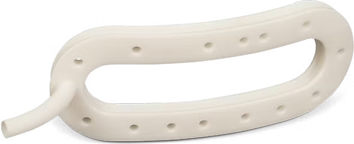
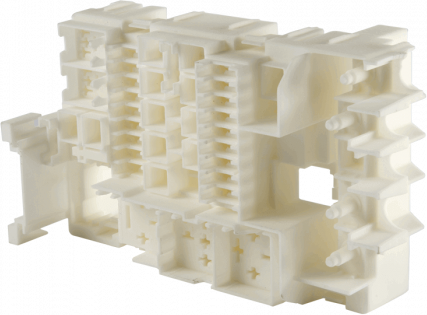

Ohne Stützstrukturen
In FDM unmögliche Geometrien, innere Kanäle, Scharniere in einem Stück gedruckt.
Beim Lasersintern wird Nylonpulver ganz ohne Stützstrukturen zu festen Funktionsteilen. Die Technologie für technische Teile und Kleinserien.

Eine dünne Schicht Nylonpulver wird in der Baukammer verteilt.
Ein Laser schmilzt das Pulver nur dort, wo das Teil entstehen soll.
Das wiederholt sich bis oben. Das nicht geschmolzene Pulver stützt das Teil: keine Stützen zu entfernen.
Senden Sie Ihre Datei: Wir bestätigen, dass SLS die richtige Wahl ist, oder empfehlen Ihnen eine andere Technologie.
Interaktives Rendering · ziehen zum Drehen

Vielseitig · Robust · Wirtschaftlich
Datenblatt ansehen →
Reproduzierbar · Industriell · Serie
Datenblatt ansehen →
Vielseitig · Robust · Flexibel
Datenblatt ansehen →
Biobasiert · Flexibel · Biokompatibel
Datenblatt ansehen →
Steif · Leicht · Strukturell
Datenblatt ansehen →
Antistatisch · Schützend · Elektronik
Datenblatt ansehen →
Steif · Stabil · Thermisch
Datenblatt ansehen →
Flammhemmend · Zertifiziert · Luftfahrt
Datenblatt ansehen →
Lebensmittelecht · Zertifiziert · Detektierbar
Datenblatt ansehen →
Flexibel · Elastisch · Dämpfend
Datenblatt ansehen →FDM, SLS oder SLA (Harz): Welche 3D-Drucktechnologie wählen? Vergleich von Präzision, Werkstoffen, Kosten und Lieferzeit, von O&D Impression 3D in Lüttich.
Datenblatt öffnen →Vergleich · 02Kohlefaser oder Glasfaser für Ihr Nylon PA12? Vergleich von Steifigkeit, Gewicht und Schlagfestigkeit, von O&D Impression 3D in Lüttich.
Datenblatt öffnen →Bei einem Einzelteil ja. Ab 5–10 Teilen wird der Stückpreis jedoch wettbewerbsfähig, da die Kammer mit mehreren Teilen gleichzeitig gefüllt wird.
Nicht von Haus aus. Für dichte Anwendungen tragen wir eine Epoxid-Imprägnierung auf, die die Poren verschließt. Vor der Lieferung geprüft.
Rohes PA12 ist grauweiß. Tauchfärben für gleichmäßige Farben (schwarz, blau, rot). Spritzlackierung für kräftige Farben oder Verläufe.
±0,2–0,3 mm bei kleinen Maßen, ±0,5 mm bei großen Abmessungen. Bei kritischen Montageteilen ein Spiel von 0,3–0,5 mm vorsehen.
Ja, das ist einer der großen Vorteile von SLS. Scharniere, Kugelgelenke, Zahnräder — montiert gedruckt, einsatzbereit. Minimales Funktionsspiel: 0,5 mm zwischen Flächen.
Standard-PA12, biobasiertes PA11, flexibles SLS-TPU und PA12-GF (glasfaserverstärkt). Jeder Werkstoff hat spezifische mechanische Eigenschaften für unterschiedliche Einsätze.
Wenn die Geometrie für FDM zu komplex ist und die mechanische Festigkeit wichtiger ist als die Oberflächenpräzision.
In FDM unmögliche Geometrien, innere Kanäle, Scharniere in einem Stück gedruckt.
Gesintertes PA12: 45–50 MPa Zugfestigkeit, 15–20 % Dehnung. Beständig gegen Öle und Lösungsmittel.
Gelenkmechanismen, Zahnräder, Schnappverbindungen — montiert gedruckt, ohne Nachmontage.
Die SLS-Kammer fasst Dutzende Teile gleichzeitig. Degressiver Stückpreis ab 5–10 Teilen.
Färben, Gleitschleifen, Kugelstrahlen. SLS-Teile vertragen alle Oberflächenbehandlungen.
PA12, biobasiertes PA11, flexibles SLS-TPU, glasverstärktes PA12-GF.
Ein CO₂-Laser schmilzt Nylonpulver selektiv Schicht für Schicht. Das nicht gesinterte Pulver dient natürlich als Stütze — keine Stützen zu entfernen.
SLS-Teile für industrielle und gewerbliche Anwendungen.
Arm aus PA12 SLS mit inneren Kabelkanälen, direkt im Teil gedruckt.
50 Teile aus PA12 SLS für Skibindungen. Kältebeständigkeit und Temperaturwechsel validiert.
120 Gehäuse aus PA12 mit integrierten Clips. Schwarz gefärbt, professionelles Finish.
SLS bietet einzigartige Gestaltungsfreiheit — sofern einige spezifische Konstruktionsregeln beachtet werden.
SLS ermöglicht dank fehlender Stützstrukturen Geometrien, die in FDM unmöglich sind. Einige Regeln gelten jedoch: minimale Wandstärke von 0,8 mm, Mindestabstand von 0,3 bis 0,5 mm zwischen zwei beweglichen Flächen, und geschlossene Hohlräume brauchen eine oder mehrere Ablauföffnungen, damit das nicht gesinterte Pulver entfernt werden kann.
Unser Techniker prüft Ihre Datei vor der Produktion und weist Sie auf Problemstellen hin. Falls nötig, schlagen wir kleine Änderungen vor, um einen erfolgreichen Druck zu gewährleisten, ohne die Funktion zu beeinträchtigen.
Die SLS-Kammer kann mehrere Dutzend Teile gleichzeitig aufnehmen. Je besser die Kammer gefüllt ist, desto niedriger die Stückkosten. Für Kunden mit mehreren Teilenummern optimieren wir die Platzierung der Teile in der Kammer, um die Packungsdichte zu maximieren und die Kosten pro Teil zu minimieren.
Diese Optimierung kann gegenüber Einzeldrucken 20 bis 40 % einsparen. Kontaktieren Sie uns mit allen Ihren Teilenummern für ein optimiertes Gesamtangebot.
Senden Sie Ihre 3D-Datei oder beschreiben Sie Ihren Bedarf: Sofortangebot mit Datei, individuelles Angebot innerhalb von 24 h.